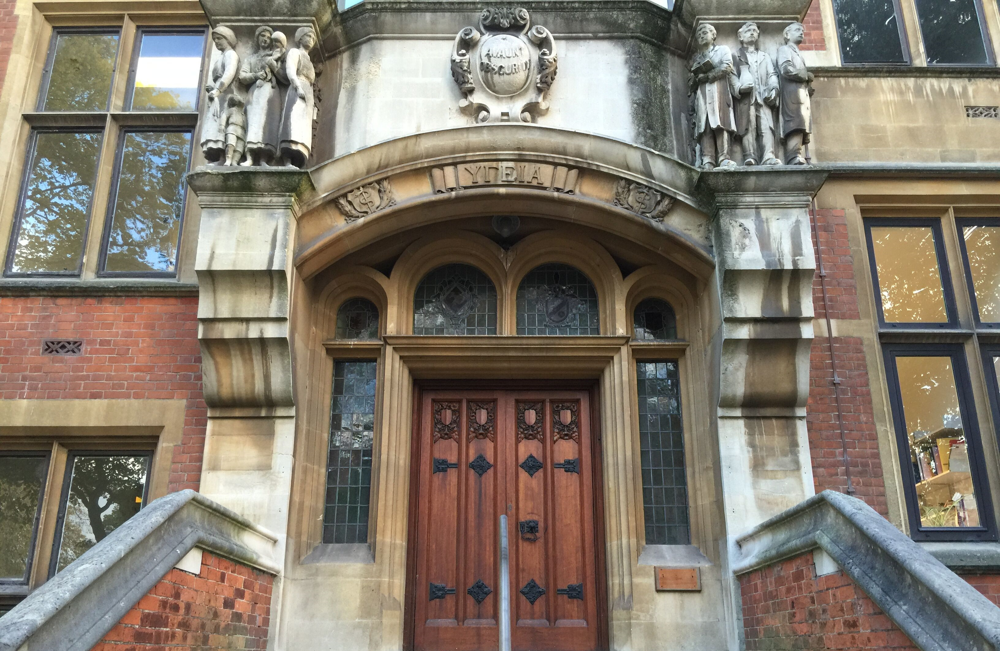

Computing with placement(MSc)
2 years (full-time) / n/a (part-time) / n/a (distance / e-Learning)
Course Aims
Designed for graduates who want to move into computing from another discipline, this one-year programme attracts students from diverse career and subject areas who wish to be introduced to the skills required for a career in Software Development. The MSc Computing programme provides students with an appropriate balance of the software engineering skills and technical abilities needed to develop effective software and systems.
Special Features
- A conversion course as well as an accredited course
- The opportunity to complement the discipline in which you graduated with the discipline of Computing
- The facility to tailor the course to your interests by the selection of an advanced option module
- Flexible choice of project topic, for example: associated with the research activity of the School; fulfilling a business need; reflecting your own interest
- Recognised by BCS, the Chartered Institute for IT
- 7-10 month experience as an IT Professional for students who successfully find a suitable placement.
Tuition Fees 2016/17
| Home/EU Students | International Students | |
|---|---|---|
| Full-time | £7,750 | £18,250 |
| Part-time | £3,875 | £9,125 |
| Placement fee | £1,550 | £1,550 |
Funding
Your can find funding information in here.More information
Relative subjects
MSc Computing with IT Management with placementMSc Advanced Computer Science with placement
See all Taught Course